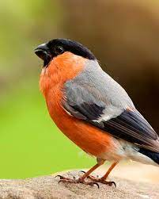
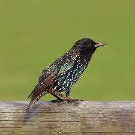
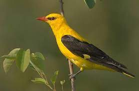
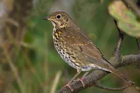
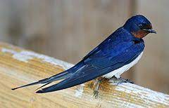

Gil
Gatunek małego ptaka z rodziny łuszczakowatych, zamieszkujący Eurazję. Nie jest zagrożony.

Szpak
Gatunek średniej wielkości ptaka z rodziny szpakowatych. Pierwotnie zamieszkiwał wyłącznie Eurazję. Nie jest zagrożony.

Wilga
Gatunek średniej wielkości ptaka wędrownego z rodziny wilgowatych. Nie jest zagrożony wyginięciem.

Śpiewak
Gatunek średniej wielkości ptaka z rodziny drozdowatych, zamieszkującego Eurazję. Nie jest zagrożony wyginięciem.

Jaskółka
Gatunek niewielkiego ptaka wędrownego z rodziny jaskółkowatych. Na terenie Polski gatunek ten jest objęty ścisłą ochroną gatunkową.